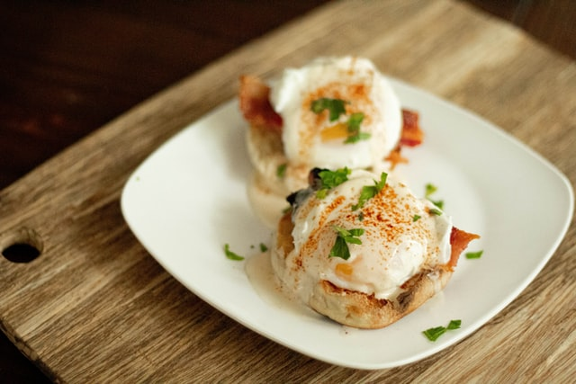

Egg Benedict

Description
Egg Benedict is a common American breakfast or brunch dish, consisting of two halves of an English muffin, each topped with Canadian baon, a poached egg, and hollandaise sauce. It was popularized in New York City.
Ingredients
Hollandaise sauce
- 6 large egg yolks
- 3 tablespoons lemon juice
- 1 pinch ground white pepper
- 1/2 cup butter, cut into small cubes
- salt to taste
- 1 pinch ground paprika
Egg Benedict
- 1 teaspoons white vinegar
- 8 large eggs
- 8 bacon
- 1/2 cup fresh spinach, or to taste
- 4 medium English muffins, split
- 2 table spoons butter, softened, or to taste
Steps
- Prepare Hollandaise: Whisk together egg yolks, lemon juice, and pepper in a pan over low heat. Add 1/2 of the butter and continue to whisk until the butter is melted and incorporated. Add remaining butter and salt and whisk until melted. Sprinkle in paprika. Turn heat off and cover with a lid to keep warm.
- Fill a large saucepan with 5 to 8 inches of water and bring to a gentle simmer. Add vinegar and reduce heat to low. Carefully break eggs into the simmering water and cook until whites are firm and the yolks have thickened but are not hard, 3 to 4 minutes. Remove the eggs from the water with a slotted spoon, dab on a kitchen towel to remove excess water, and place onto a warm plate.
- While the eggs are poaching heat ham in a skillet over medium-high heat until warm, 2 to 3 minutes, microwave spinach sprinkled with a little water on a plate for 30 seconds, and toast English muffins.
- Spread butter on toasted muffins. Top each half with a slice of ham, some spinach, and a poached egg. Drizzle with a healthy helping of Hollandaise and serve immediately.